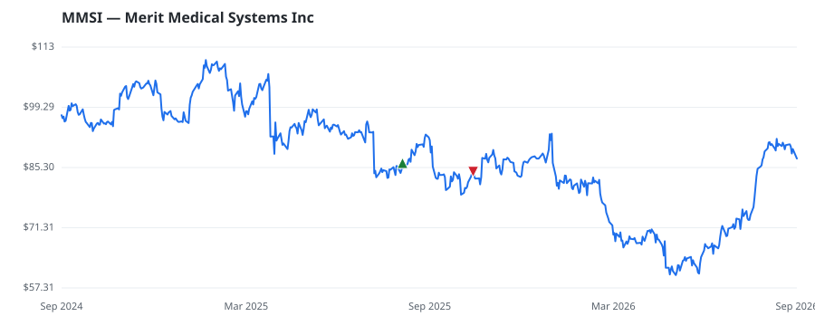

bullish · bearish · n/a — dots: price>SMA10 · SMA10>SMA50 · SMA50>SMA200 · up>down volume (20d)
Health Care Equipment & Services · mid cap · ★ 1 buyer(s) sit on a committee that regulates this industry
Members who bought MMSI earned a dollar-weighted -1.9% from their disclosure dates, versus +3.5% for the S&P 500 over the same holding windows (-5.4% alpha).

▲ green = a disclosed purchase · ▼ red = a disclosed sale (plotted on disclosure date)
Merit Medical Systems Inc is a medical equipment company that develops and manufactures products for interventional cardiology, radiology, and endoscopy procedures. The firm reports two segments which are Cardiovascular and Endoscopy. The majority of the revenue is earned from the Cardiovascular segment which consists of cardiology and radiology medical device products that assist in diagnosing and treating coronary artery disease, peripheral vascular disease, and other non-vascular diseases and includes embolotherapeutic, cardiac rhythm management, electrophysiology, critical care, and interv SURGICAL & MEDICAL INSTRUMENTS & APPARATUS · website
| Revenue | $1.5B | Net income | $128.5M |
|---|---|---|---|
| Operating income | $184.7M | Diluted EPS | $2.13 |
| Assets | $2.7B | Equity | $1.6B |
| Member | Chamber | Out-performer | Disclosed buys $ | Return on buys |
|---|---|---|---|---|
| Lisa McClain ★ | house | — | $8K | -1.9% |
Disclosed $ figures are bracket midpoints — filings report ranges (e.g. $1,001–$15,000), not exact amounts.
🛒 Newly buying: Iron Triangle Partners LP (+5%, 3.9% of book)
| Fund | Fund alpha vs SPY | Position | % of book |
|---|---|---|---|
| Iron Triangle Partners LP | +5% | $34M | 3.9% |
Hedge data: SEC EDGAR 13F · ranked funds beat SPY in >50% of their quarters · fund alpha = mirror-portfolio return minus SPY.